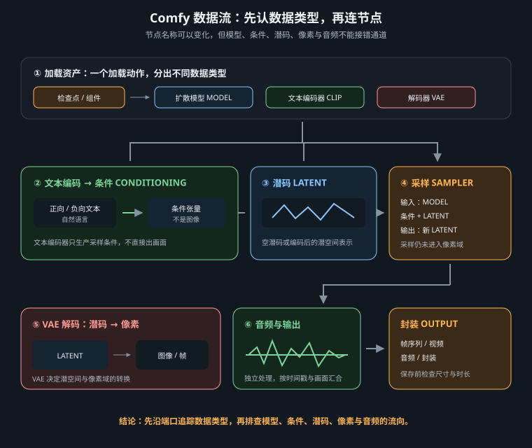

不背节点菜单，从类型、方向与边界读懂可迁移的视频生成数据流

本文出现的“加载器、条件组装、采样器、解码器”等是职责名。界面里的具体节点名、端口名、分类位置和参数范围，均以当前工作流、ComfyUI 版本及已安装插件为准；导入旧图后先看缺失节点报告与插件来源，不要靠同名猜兼容。
ComfyUI 画布是一张有向图：节点接收特定类型，完成一次转换，再把结果交给下游。读图时从最终保存节点逆向追线，依次找到像素帧或音频、解码器、去噪后的潜码、采样过程、条件与模型。只要类型和职责连续，即使插件把节点改名、拆成三块或合成一块，仍能判断它是否完整。
| 数据层 | 代表内容 | 检查重点 |
|---|---|---|
| 模型与编码器 | 去噪模型、文本/视觉编码器、VAE、音频编解码器 | 架构、精度、版本是否配套 |
| 条件 | 提示词向量、首尾帧、参考身份、遮罩、控制信号 | 参考的职责与时间位置是否明确 |
| 潜码 | 空潜码、图像/视频潜码、采样后的潜码 | 宽高、帧数、批次与通道格式 |
| 媒体 | 图像帧、视频对象、音频波形、文件路径 | 帧率、时长、色彩与封装参数 |
模型加载支路提供去噪核心；编码器把文字、图片或声音翻译为条件；VAE 在像素空间与潜空间之间翻译。三者不是可随意拼装的零件：同一系列的不同代际也可能拥有不同潜码通道、缩放因子或分词方式。量化精度只影响装载方式与资源占用，不代表任意加载器都能解释该权重。
加载成功只说明文件能被读取，不等于语义匹配。提示词完全跑题、解码成彩噪或少步采样崩坏，都可能是组合错误而非随机种子问题。
条件描述“要生成什么”，潜码描述“在哪个压缩画布上生成”。文生视频通常由尺寸和帧数创建空潜码；图生视频则先把输入帧编码到潜空间，并按插件协议写入起点、终点或参考支路。身份参考、首帧和姿态控制看起来都接图片，但语义不同：首帧占据时间轴，身份参考可只提供特征，控制图则约束结构。
| 输入 | 数据角色 | 接错后的典型表现 |
|---|---|---|
| 提示词 | 经文本编码器形成条件张量 | 编码器类型错，主体或动作跑题 |
| 首帧/尾帧 | 经匹配的VAE写入指定时间位置 | 画面起止跳变、尺寸被意外拉伸 |
| 参考图/视频 | 形成身份、风格或运动特征 | 把参考误当关键帧，构图被锁死 |
| 宽高与帧数 | 定义潜码形状和计算规模 | 维度不合规、显存暴涨或节点拒绝执行 |
尺寸倍数、合法帧数和参考数量以当前模型与条件插件为准。把这些约束集中在参数节点或分组入口，避免同一个帧数散落在音频、采样与封装节点里。
采样并非一个神秘按钮，而是四股数据汇合：随机噪声决定起点，条件与模型组成引导，调度器生成各步噪声水平，采样算法负责数值推进，执行器把结果写回潜码。有些工作流把它们合成一个节点，有些完全拆开；判断依据仍是输入是否齐全。
| 旋钮 | 控制对象 | 实验纪律 |
|---|---|---|
| seed | 初始噪声 | 对照实验固定它；抽构图时只改它 |
| steps / sigma日程 | 去噪路径与计算次数 | 按模型或加速适配器建议起步 |
| guidance | 条件影响强度 | 过高可能带来过饱和、抖动和僵硬 |
| denoise | 保留输入潜码的程度 | 重绘与续写时逐级测试，不套用文生值 |
采样算法和日程不是通用排行榜。蒸馏模型、加速LoRA与普通底座可能要求不同步数和日程；具体选项名称仍以当前工作流/插件为准。
采样结束得到的是潜码，不是可播放文件。视频VAE把它解码为帧批次；支持原生音频的模型可能另有音频潜码与音频解码器。两路在封装阶段按帧率和采样率汇合，再由输出节点写成MP4、WebM或图像序列。无原生音频的管线则应明确使用外部音轨，不能因为保存节点存在音频口就假设模型生成了声音。
解码常是显存峰值。若采样完成却在最后失败，优先尝试分块解码、降低分辨率或帧数，并检查分块重叠是否产生接缝。输出前核对帧数÷帧率与音频时长；封装参数只改变文件兼容性和体积，不会修复潜码中的动作错误。
模型流：匹配的去噪模型 ───────────────┐ 编码流：文本编码器 → 提示词条件 ───────┤ 图像流：首帧 → 尺寸对齐 → VAE编码 ────┼→ 条件组装 + 初始潜码 参数流：宽高、帧数、seed、步数 ────────┘ │ 噪声 + 引导 + 日程 + 采样算法 ───────────────→ 去噪潜码 去噪潜码 → 视频VAE解码 → 帧序列 ───────────────┐ 音频潜码 → 匹配的音频解码器 → 音频（可选） ────┼→ 按fps封装 → 保存 外部音频 → 裁切/补齐（无原生音频时可选） ───────┘
复现时先用短时长、低分辨率跑通整链，确认首帧方向、动作和音画时长，再只提升一个规格。任一节点的具体名称、端口及参数取值，都以导入当日的工作流和插件版本为准。
画布JSON面向编辑，常含坐标、分组和小组件状态；API JSON面向执行，核心是节点编号、类名、输入值以及“上游节点编号+输出序号”的连线引用。提交前使用当前ComfyUI提供的API格式导出功能，并确认动态提示、上传文件名与输出前缀已参数化。
{
"12": {
"class_type": "当前插件中的采样执行节点",
"inputs": {
"model": ["3", 0],
"conditioning": ["8", 0],
"latent": ["9", 0],
"seed": 421337
}
}
}
class_type和端口名会随核心或插件实现变化，不能把示意文字替换成猜测名称。自动化调用还应检查HTTP状态、任务ID、队列结果与输出文件；“已入队”不等于“已生成”。
| 记录项 | 最低要求 | 作用 |
|---|---|---|
| 运行环境 | ComfyUI提交号、Python、Torch、CUDA/设备 | 定位核心与算子差异 |
| 插件 | 仓库地址、提交号、启用的节点包 | 避免“最新版”无法追溯 |
| 资产 | 模型、编码器、VAE、LoRA文件名与校验值 | 识别同名不同文件 |
| 执行输入 | API JSON、seed、提示词、尺寸、帧数、输入素材 | 重放同一任务 |
| 输出 | fps、编码器、容器、生成日期与耗时 | 区分生成质量和封装问题 |
工作流发布时把版本记录与JSON成对保存。升级前复制环境或锁定提交，升级后用同一输入做回归；若结果变化，先比较依赖和默认参数，再讨论模型随机性。
| 症状 | 高概率边界 | 优先处理 |
|---|---|---|
| 导入后出现红色缺失节点 | 插件未装、类名改动或版本不符 | 按工作流来源锁定插件提交，不找同名替代品硬接 |
| 端口无法连线 | 数据类型或节点代际不同 | 检查上下游实际输出类型，寻找明确的转换节点 |
| 加载即报形状或键错误 | 模型、编码器、VAE或LoRA不配套 | 回到发布组合逐项核对架构与校验值 |
| 能运行但内容跑题 | 编码器类型错误或条件没进引导 | 预览条件支路，确认提示与参考进入正确端口 |
| 画面是彩噪、灰片或闪烁 | VAE不匹配、潜码格式错或采样配置越界 | 先恢复发布方最小配置，再逐项加插件 |
| 采样成功、解码时显存溢出 | 帧批次展开造成峰值 | 分块解码，或降低宽高和帧数验证 |
| 视频变速或音画错位 | 生成帧率、封装帧率、音频时长不一致 | 统一fps并按目标时长裁切或补齐音频 |
| API入队但没有文件 | 队列执行失败或输出节点未执行 | 查询任务历史与节点错误，不只看入队响应 |